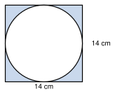

Instructions: Answer all questions. Show all your working clearly. Use π = 22/7 where needed.
ABCD is a parallelogram. AB = 14 cm, BC = 8 cm and the perpendicular distance between AB and DC is 6 cm.
(i) Find the area of the parallelogram ABCD.
(ii) Find the perimeter of the parallelogram ABCD.
(iii) Find the perpendicular distance between the sides BC and AD.
The area of the parallelogram PQRS is 96 cm2 and PQ = 12 cm.
(i) Find the value of h.
(ii) The perimeter of PQRS is 40 cm. Find the length of QR.
(iii) Find the perpendicular distance between the sides QR and PS.
The lengths of the parallel sides of a trapezium are 9 cm and 15 cm. The perpendicular distance between them is 8 cm.
(i) Find the area of the trapezium.
(ii) A rectangle has the same area as this trapezium and its width is 8 cm. Find the length of the rectangle.
(iii) If the 15 cm side is increased by 3 cm (height unchanged), by how much does the area increase?
The area of the trapezium shown is 70 cm2. The parallel sides are 6 cm and 8 cm.
(i) Find the value of h.
(ii) Another trapezium has the same height h, one parallel side 5 cm and an area of 80 cm2. Find the length of its other parallel side.
(iii) Give two pairs of whole-number lengths for the parallel sides of a trapezium with area 70 cm2 and height 10 cm.
Use π = 22/7.
(i) Find the area of a circular lamina of radius 7 cm (shown in the figure).
(ii) Find the area of a circular lamina of diameter 28 cm.
(iii) The area of a circular lamina is 1386 cm2. Find its radius.
The largest possible circular lamina is cut out from a square lamina of side 14 cm. Use π = 22/7.
(i) Find the area of the square lamina.
(ii) Write down the radius of the circular lamina.
(iii) Find the area of the circular lamina.
(iv) Find the area of the remaining (shaded) part.

The figure shows the side view of a wall. The lower part is a rectangle 8 m long and 3 m high. The upper part is a trapezium with parallel sides 8 m and 4 m, and height 2 m. There is a circular window of radius 0.7 m. Use π = 22/7.
(i) Find the area of the rectangular part.
(ii) Find the area of the trapezium part.
(iii) Find the area of the window.
(iv) Find the area of the wall to be painted (without the window).
(v) Painting costs Rs. 200 per square metre. Find the total cost.